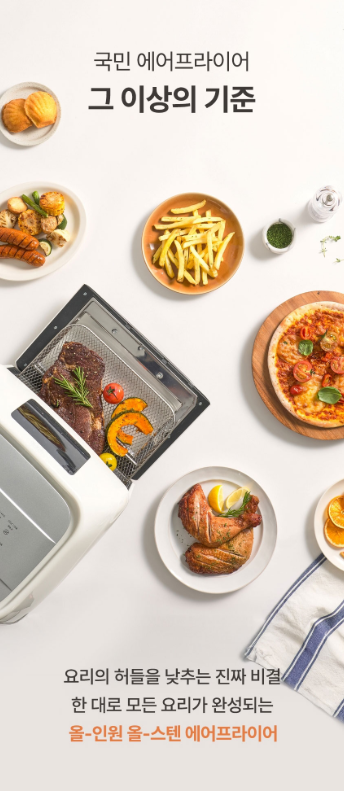
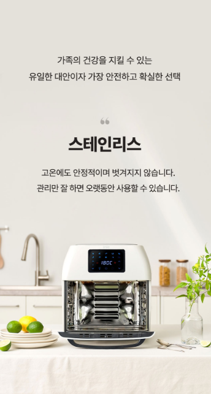

1. 아이닉 대용량 올스텐 에어프라이어 16L은 어떤 제품일까?
아이닉 대용량 올스텐 에어프라이어 16L은 오븐형 구조의 대용량 에어프라이어입니다. 16L 용량에 터치 및 디지털 디스플레이를 적용했으며 3단 트레이를 사용할 수 있어 한 번에 다양한 재료를 조리하려는 경우 살펴볼 만합니다. :contentReference[oaicite:2]{index=2}
2. 16L 대용량이 필요한 경우
소형 바스켓형 에어프라이어의 조리 공간이 부족하게 느껴졌다면 16L급 오븐형 제품을 고려할 수 있습니다. 여러 단으로 나누어 사용할 수 있어 다양한 재료를 한 번에 조리하려는 가정에서도 활용도를 살펴볼 수 있습니다.

3. 다양한 조리 기능
AO-16L은 로티세리, 식품건조, 베이킹, 그릴 등의 기능을 지원하는 것으로 확인됩니다. 온도는 30~200℃, 시간은 1~60분 범위로 조절할 수 있어 다양한 조리 방식에 활용할 수 있습니다. :contentReference[oaicite:3]{index=3}
4. 올스텐 구조와 관리
스테인리스 소재 제품은 조리 후 내부와 트레이에 남은 기름이나 음식물을 관리하는 것이 중요합니다. 특히 처음 사용하는 경우에는 제품 설명서의 초기 세척 방법을 확인하고, 구성품별 세척 가능 여부를 구분해 관리하는 것이 좋습니다.

5. 온도와 조리 시간
아이닉 AO-16L은 온도 조절 범위가 30~200℃이며 시간은 1~60분으로 설정할 수 있습니다. 식품과 조리량에 따라 적정 온도와 시간은 달라질 수 있으므로 처음 조리할 때는 음식 상태를 확인하면서 조절하는 것이 좋습니다. :contentReference[oaicite:4]{index=4}
6. 설치 공간 확인
오븐형 대용량 에어프라이어는 바스켓형 제품보다 설치 공간을 더 많이 차지할 수 있습니다. 제품 크기뿐 아니라 열이 빠져나갈 공간과 문을 열었을 때 필요한 공간까지 함께 확인한 뒤 설치 위치를 정하는 것이 좋습니다. 확인 가능한 본체 크기는 약 361×383×346mm입니다. :contentReference[oaicite:5]{index=5}
7. 구매 전 체크리스트
- 정확한 모델명과 색상을 확인합니다.
- 16L 용량과 내부 공간이 필요한 조리량에 맞는지 확인합니다.
- 스테인리스 소재와 구성품의 세척 방법을 확인합니다.
- 온도와 시간 조절 범위를 확인합니다.
- 로티세리와 식품건조 등 필요한 기능이 포함됐는지 확인합니다.
- 설치 공간과 전원 조건을 확인합니다.
- 배송, 교환, 반품과 보증 조건을 확인합니다.
자주 묻는 질문
아이닉 16L 에어프라이어는 어떤 형태인가요?
오븐형 에어프라이어로 16L 용량과 3단 트레이를 갖춘 제품입니다. :contentReference[oaicite:6]{index=6}
온도와 시간은 어느 정도까지 조절되나요?
확인 가능한 제품 사양 기준 온도는 30~200℃, 시간은 1~60분 범위입니다. :contentReference[oaicite:7]{index=7}
구매할 때 가장 먼저 확인할 것은 무엇인가요?
정확한 모델명과 색상, 구성품, 설치 공간, 조리 기능과 최종 판매 조건을 확인하는 것이 좋습니다.